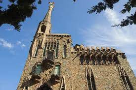

Gaudi

Érigé entre 1900 et 1909 à Barcelone, Bellesguard, également connu sous le nom de Casa Figueres, représente un autre joyau du modernisme catalan. Son architecture unique, mêlant des éléments médiévaux et modernistes, en fait une résidence distinctive. Les tours élancées et les détails sculpturaux témoignent de l'ingéniosité de l'époque. En tant que site historique, Bellesguard offre aux visiteurs une plongée dans le passé artistique de Barcelone. Classée au patrimoine culturel de la ville, cette demeure incarne l'héritage riche et diversifié de l'architecture moderniste en Catalogne.
